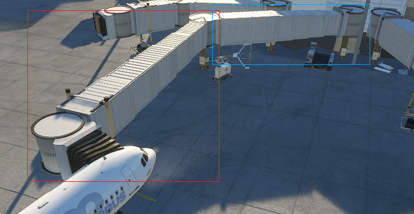
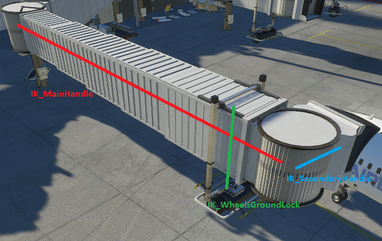
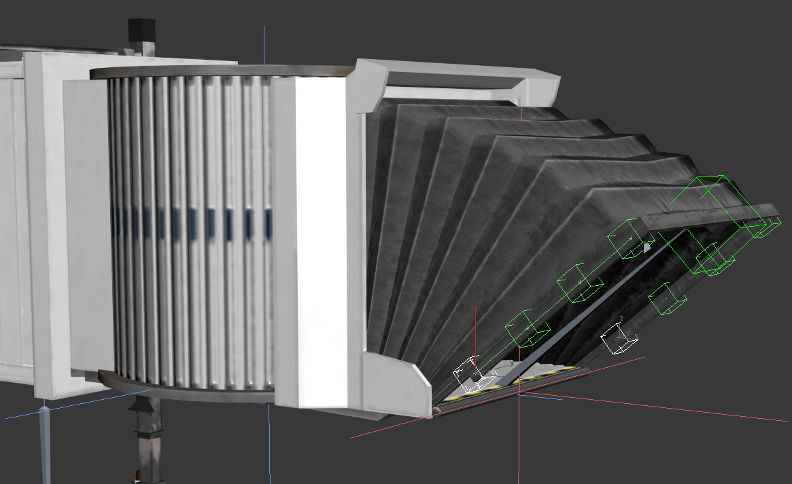
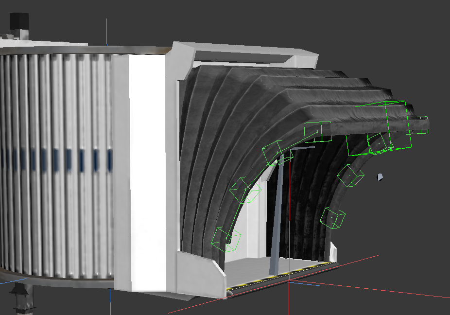
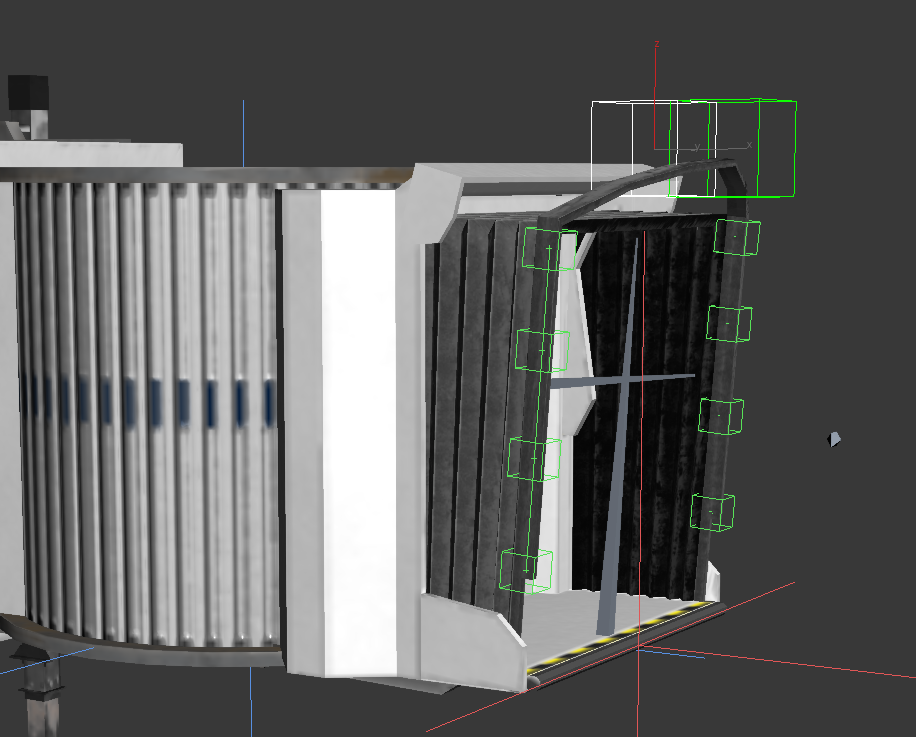
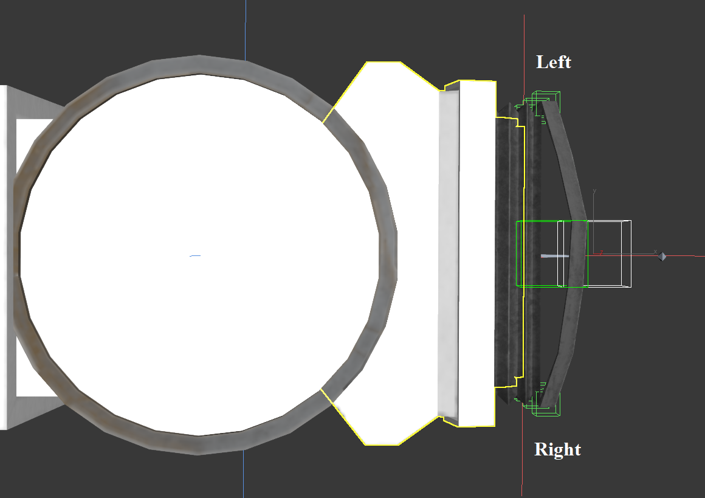

Jetways
- Jetways and jetway links requirements
- IK Chains
- Animating the hood
- Other Jetway SimObject specifications
A jetway is usually composed of two objects, the jetway itself, which is be a SimObject, and a jetway link, a SceneryObject connecting the jetway to a buidling. Note that the jetway link is optional, and that having the jetway itself be a SceneryObject (as in FSX) is deprecated.
A jetway (on the left, in the red rectangle) and its jetway link (on the right, in the blud rectangle) connected to an A320 Neo in MSFS.

Details on how to place a jetway and its optional link are available in the airport details and the Scenery Editor chapter.
Jetways and jetway links requirements
A Jetway Link must be a SceneryObject, and should match the associated jetway. More precisely, this means the end of the link that will connect to the jetway should be at the same altitude as the jetway itself.
A jetway link can have an optional single IK chain named IK_MainHandle (see section IK Chains below). If defined, the End Node of the chain will try to reach the position (0,0,0) of the actual jetway, while keeping the same altitude offset relative to the ground as in its default position. This IK chain can be very useful to adapt a single model of link to various distances from a building to the jetway, by extending and rotating its parts.
A Jetway should be a SimObject, with its position (0,0,0) being the bottom of a fixed pilar part, to which a link can connect itself. It also should use three specific IK chains (see section IK Chains below for details on IK), and six specific ModelBehaviors and animations (see section Animating the hood below)
A representation of Jetway IK chains

The IK chain named IK_MainHandle should have a Start Node at some fixed position of the jetway, and an End Node in the middle of the “head” of the jetway (i.e. the rotating cylinder that gets close to the aircraft).
The IK chain named IK_SecondaryHandle should have a Start Node in the middle of the “head” of the jetway, and an End Node on the contact point that will touch the aircraft. Also, its Nodes should only use IK rotations and no IK translation.
End Nodes from both IK_MainHandle and IK_SecondaryHandle should be placed such that, when properly connected, they are at the same altitude as the bottom of the aircraft door.
Note that the Nodes of the IK_SecondaryHandle chain should not be part of the IK_MainHandle chain, except possibly for the Start Node of by IK_SecondaryHandle that could be the End Node IK_MainHandle (though we recommend having the secondary start be a son of the main end).
The IK_WheelsGroundLock chain controls the height of the wheels, in order to stay on the ground during jetway movements. Its End Node should be on the ground between the wheels.
Like any other SimObject, a Jetway can have ModelBehaviors. Moreover, a jetway should have six specific animations controlled by six specific ModelBehaviors in order to properly animate the hood, and adapt it to any aircraft shape. This is detailed in the section Animating the hood.
IK Chains
IK, or Inverse Kinematics, is a system to move a chain of Node in an object, trying to reach some target position with the End Node of the chain, while verifying some constraints on the movements. The chain parameters and the Node constraints are defined in the model xml file, in the <ModelInfo> section (see the corresponding chapter).
An example of Jetway with IK parameters defined is available in the Samples\Jetway folder of the SDK.
In <ModelInfo>, the two following elements related to IK are available:
| Element | Description | Quantity |
|---|---|---|
<IKChain> |
Describes a chain of IK, with its unique (mandatory) Name attribute. |
0+ |
<IKConstraint> |
Describes contraints of IK for a single Node of the object. | 0+ |
<IKChain>
Currently in MSFS, the only IK chains used are IK_MainHandle for both jetways and jetway links, and IK_SecondaryHandle and IK_WheelsGroundLock for actual jetways. Any other chain will have no effect. Apart from its mandatory Name attribute, which should be one of the above, an <IKChain> element has the following elements:
| Element | Description | Quantity |
|---|---|---|
<Start> |
Name of the Node at the start of the chain, which can move within its constraints. Should not be the root Node of the object | 1 |
<End> |
Name of the Node at the end of the chain, aiming for a target position. Must be a descendant of the Start Node in the hierarchy. Will not move relative to its parent as part of this IK chain. |
1 |
<TranslationSpeed> |
Maximal translation speed of each Node of the chain (relative to its parent), in meters per second. | 1 |
<RotationSpeed> |
Maximal rotation speed of each Node of the chain (relative to its parent), in degrees per second. | 1 |
Note that the hierarchy of Nodes in the object is crucial to define an IK chain. The chain will be composed of the line of descendants from the Start Node to the End Node, and each of these nodes (except End) will move within its constraints, aiming the End Node towards a target. Each of these nodes move relative to its parent, and any other descendants (in the hierarchy) of these nodes will follow.
<IKConstraint>
An IKConstraint defines the constraints of a Node for IK purposes. It will only have any effect if the Node is part of an IK chain (excluding the End node). <IKConstraint> contains the following elements:
| Element | Description | Quantity |
|---|---|---|
<Node> |
Contain the name of the Node that can move within constraints during IK. | 1 |
<X> |
The node can be translated along the X axis. | 0-1 |
<Y> |
The node can be translated along the Y axis. | 0-1 |
<Z> |
The node can be translated along the Z axis. | 0-1 |
<Pitch> |
The node can be rotated by changing pitch. | 0-1 |
<Bank> |
The node can be rotated by changing bank. | 0-1 |
<Heading> |
The node can be rotated by changing heading. | 0-1 |
All those elements (except for <Node>) are optional, and when not defined this means the Node cannot move along this direction during IK. They also have each the two following optional attributes:
| Attribute | Description |
|---|---|
Min |
Minimal position/angle relative to its parent Node |
Max |
Maximal position/angle relative to its parent Node |
If neither Min nor Max are defined, this means the Node has no limits to translating or rotating along this direction, relative to its parent. If both Min and Max are defined, the Node will always stay within the given range relative to its parent. Note that the default position/angle (relative to parent) should be in this range.
A Node part of an IK Chain that has no defined <IKConstraint> will not move at all (relative to its parent) during IK movements.
Model creation for IK chains
Here are some considerations when creating a model with parts that will use IK chains.
When moving through IK system, a Node will move directly (translating and/or rotating), bringing all its descendants in the hierarchy with it. Usually, jetway (or link) parts that move through IK will not be deformed, which means skinning is not necessary to move the meshes of the parts. Since skins also have a higher performance cost, we recommend to skin only the hood of a jetway, and not its other parts, if possible.
When a jetway or jetway link has multiple LoDs, an IK chain needs to be synchronized when switching from one lod to another. To make sure the synchronization works properly, please respect the following constraints. First, make sure each chain of node has the same Start and End node in each lod, and the same intermediate nodes in the chain (going up from End to Start, parent-to-parent). Second, the Start node of each chain should also have a parent node that is common accross lods, and thus Start nodes should not be directly in the scene without an actual parent Node.
Animating the hood
The hood of a jetway can generally be deformed, while animated, trying to match the shape of the aircraft. In order to have a better result with various aircraft shapes, six specific animations should be created, which will then be played through ModelBehaviors to match the data of the aircraft.
If all aircrafts and all jetways use the same standard of animations and data, this will result it better hood animation for any combination aircraft-jetway, even if coming from different companies.
Creating the proper hood animations
The six animations use skinning to share their control of the hood, and deform the mesh appropriately. On left and right side, an animation is use to “incline” the base of the jetway hood, and another to “bend” the top part of the hood. The last two animations control the top-center part of the hood, with vertical and horizontal movements. All of those animations should be linear, because they will be played partially through ModelBehaviors, stopping at a more appropriate percentage (or angle) according to the aircraft data.
The following image shows the “deployment” animation (which inclines the edges of the hood), for both left and right side.

The following image shows the “bend” animation, for both left and right side, here at the last frame of animation.

The following image shows the “top vertical” animation. Here shown at last frame, its “default” state should be at the middle of the animation, with the first frame being below the default position.

The following image shows the “top horizontal” animation. Here shown at last frame, its “default” state should be at the middle of the animation, with the first frame being in the back.

Finally, you can see the source of MSFS base jetway as a reference, available in the Samples\Jetway folder of the SDK.
Configuring the hood ModelBehaviors
In the ModelBehaviors of the jetway (see [the corresponding chapter][modelbehaviors]), the six animations are used in six templates to properly control those animations. All pre-defined templates are available by using <Include Path="Asobo\Misc\SimObjects.xml"/>
ModelBehavior template ASOBO_Jetway_Hood_Left_Bend uses the simvar JETWAY HOOD LEFT BEND, and controls the left bending animation by percentage of anim. Its parameter ANIM_NAME contains the name of the corresponding animation, while PERCENT_PER_SECOND is the speed of the animation.
ModelBehavior template ASOBO_Jetway_Hood_Left_Deployment uses the simvar JETWAY HOOD LEFT DEPLOYMENT, and controls the left inclination animation by angle. Its parameter ANIM_NAME contains the name of the corresponding animation, while DEGREE_PER_SECOND is the speed of the animation. Finally, MIN_ANGLE and MAX_ANGLE contain the angles (in degrees) at the start and end of the animation, where 0 is a default vertical position of the hood.
Similarly, the right side of the jetway hood uses ModelBehavior templates ASOBO_Jetway_Hood_Right_Bend and ASOBO_Jetway_Hood_Right_Deployment, associated with simvars JETWAY HOOD RIGHT BEND and JETWAY HOOD RIGHT DEPLOYMENT.
ModelBehavior template ASOBO_Jetway_Hood_Top_Horizontal uses the simvar JETWAY HOOD TOP HORIZONTAL, and controls the horizontal animation of the top part of the hood, by percentage of anim. Its parameter ANIM_NAME contains the name of the corresponding animation, while PERCENT_PER_SECOND is the speed of the animation.
Similarly, the vertical animation of the top of the hood is controlled by ASOBO_Jetway_Hood_Top_Vertical, using JETWAY HOOD TOP VERTICAL, with the same parameters.
Other Jetway SimObject specifications
Since its base is not moving, a Jetway should be a SimObject of type StaticObject, and thus have an appropriate folder organisation as well as a correct sim.cfg file.
A Jetway also has access to the following specific ModelBehavior templates (useable by including “Asobo.xml”) and simvars.
A template ASOBO_Jetway_Wheel_Roll can control an animation that rolls the wheels of the jetway (which should contain one full turn an no more, to be looped properly) by using the simvar JETWAY WHEEL SPEED. Its parameters are ANIM_NAME, the name of the animation, and WHEEL_RADIUS containing the radius (in meters) of the rolling wheel.
A template ASOBO_Jetway_Wheel_Orientation helps control an animation to rotate the wheels when the jetway moves to its side or diagonally. This template uses simvar JETWAY WHEEL ORIENTATION TARGET, which is approximative, and sets the simvar JETWAY WHEEL ORIENTATION CURRENT after some smoothing, using it to control the animation. Preferably, the animation should be covering a 180° interval, or more (-90° to 90° for example). The parameters contain ANIM_NAME, MIN_ANGLE and MAX_ANGLE (in degrees) where the min should be less than the max, MIN_TO_MAX which is 1 if the animation starts at the min angle, and 0 otherwise. Parameter SPEED control the maximum rotation speed (in degrees/second), and SMOOTH_TIME_FACTOR is a factor that delays rotation to smooth errors in angles from the TARGET simvar, which will smooth more and delay more the higher its value is (can be roughly estimated as a delay in seconds).
Finally, JETWAY MOVING is a boolean simvar that is true when the jetway is currently moving through IK. It can for example be useful to control sounds of jetway.